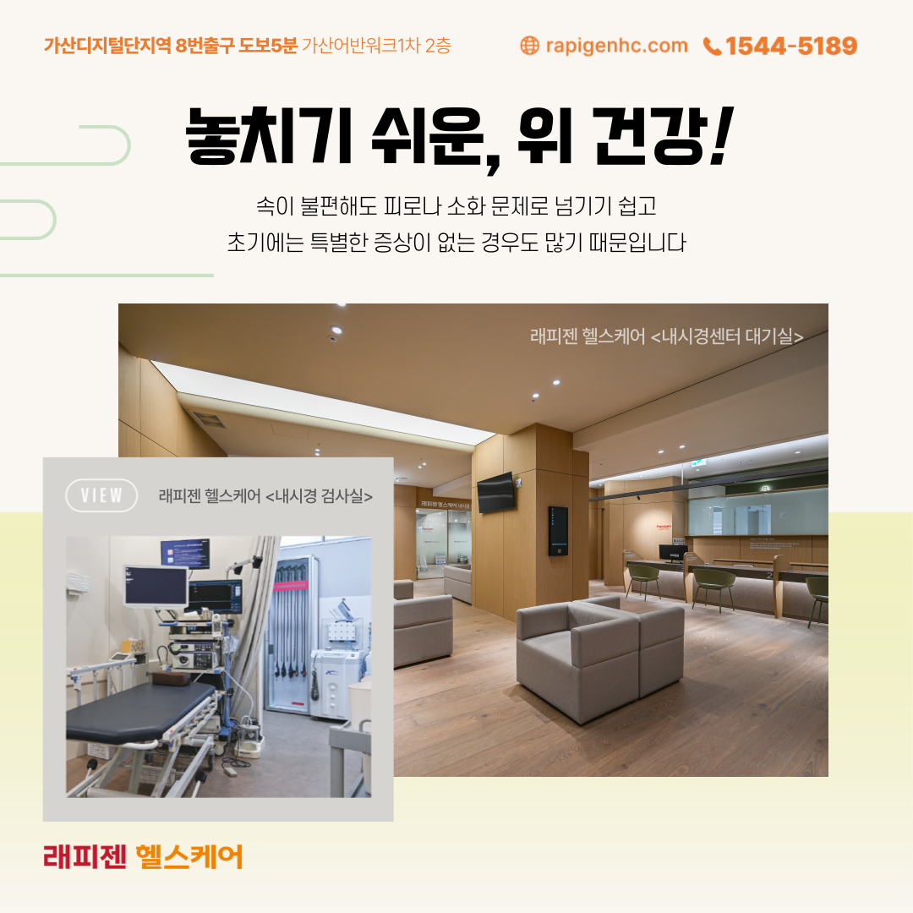
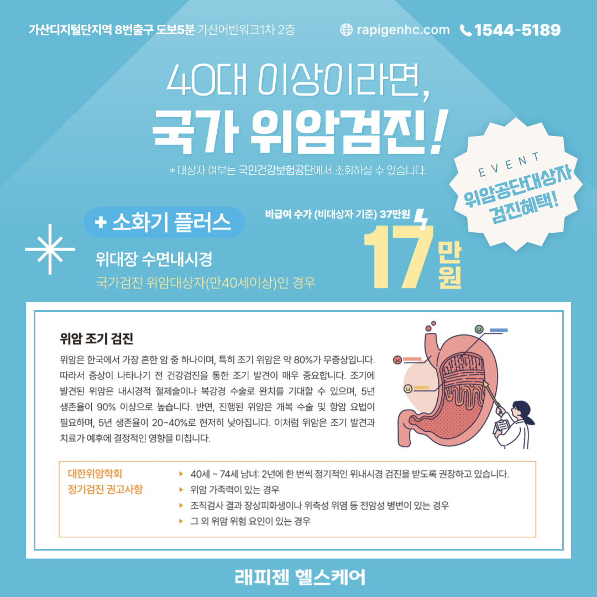
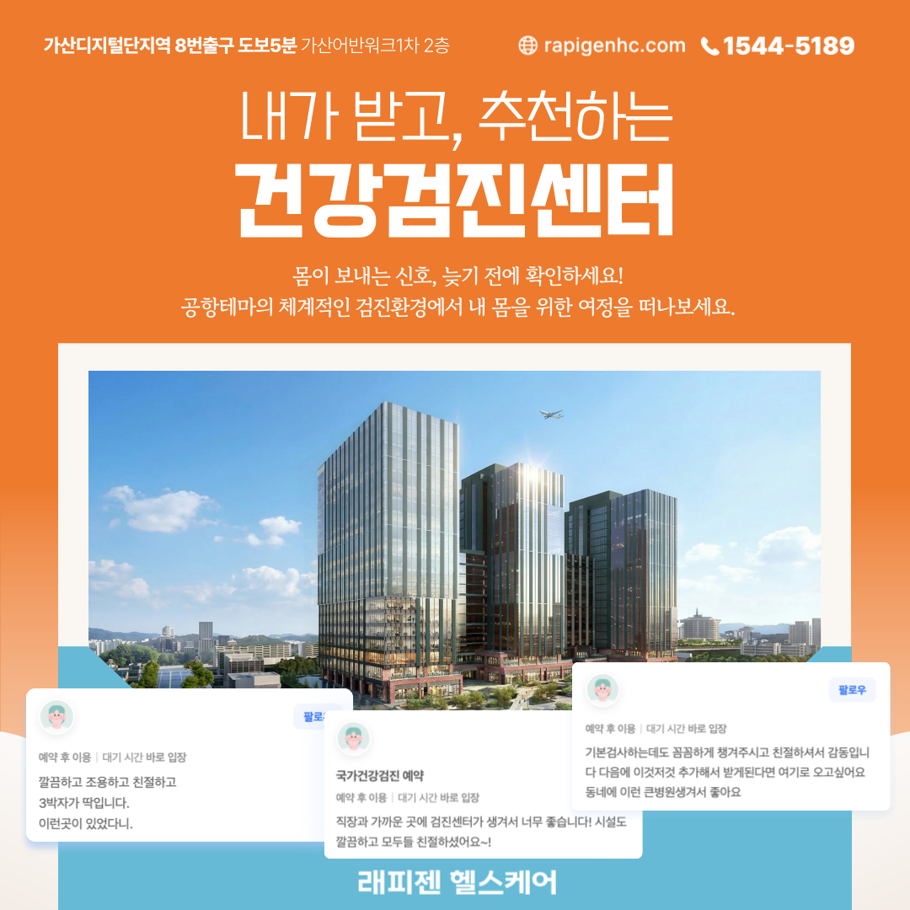
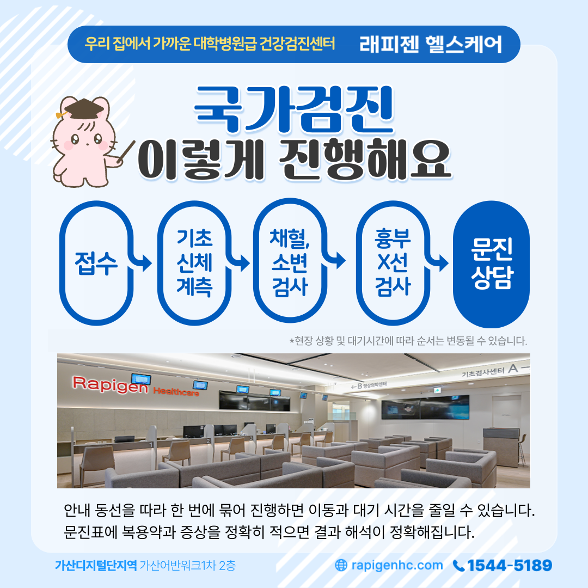
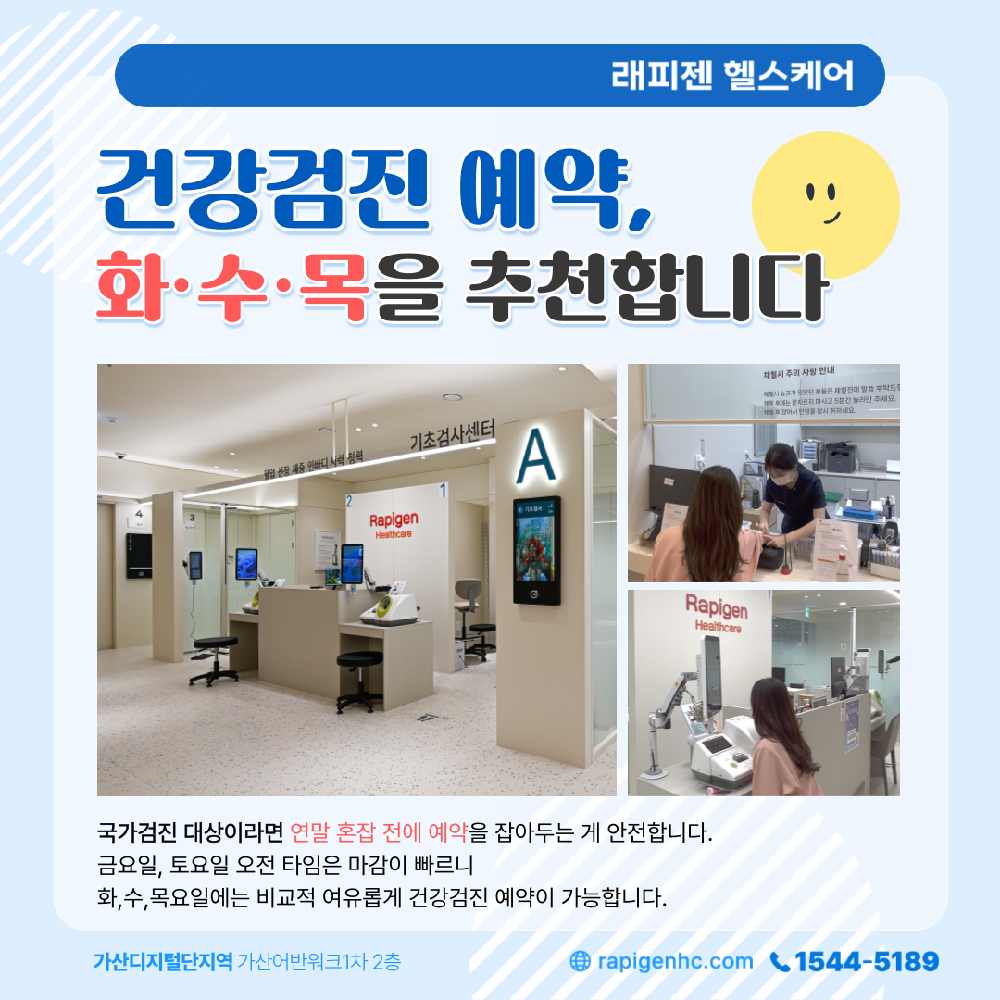
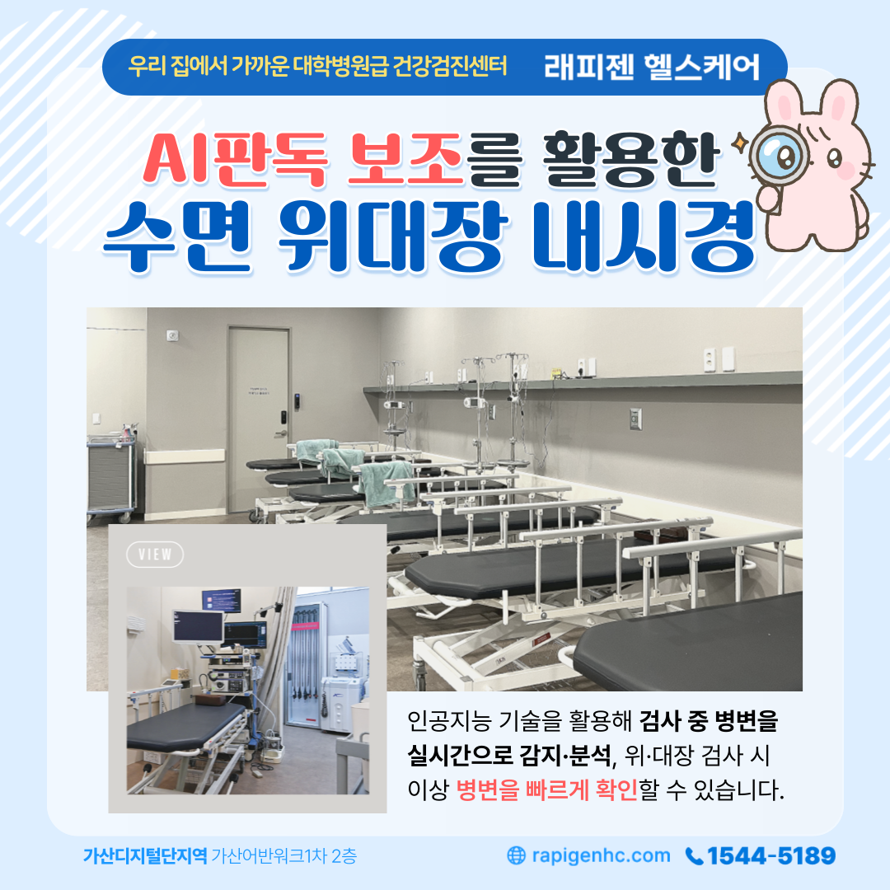

2026.8.31 까지 한정 혜택
나를 위한 맞춤 설계
나를 위한 맞춤 설계
프리미엄 종합검진
증상과 연령, 가족력에 맞게
검사항목을 자유롭게 선택하세요.
모든 패키지 공통
기본포함 검사
패키지 선택 전, 공통으로 포함되는 기본 검사항목을 확인해 주세요.
기초검사
신체계측 및 체성분분석, 혈압, 시력, 청력, 문진
흉부 X선검사
폐결핵, 폐렴, 기관지염, 폐암 및 그 외 늑막 유착 등
안저·안압
안저촬영, 안압측정 · AI 기반 안저 영상 진단 보조
심전도
부정맥, 협심증 등 심장 질환 확인
골밀도
골다공증, 골감소증, 골절 위험도를 조기에 진단 ※ 만 40세 이상 (레드, 오렌지 패키지 제외)
혈액검사
종양표지자, 갑상선·간·췌장·신장 기능, 간염, 통풍, 혈당, 지질혈증, 전해질, 빈혈, 심혈관 기능, 혈청학 및 일반혈액 검사
소변검사
요단백, 요잠혈 등 비뇨기계통 이상 유무
국가검진대상자
분변잠혈(만 50세 이상), 유방 X선촬영(만 40세 이상 여성), 자궁경부암검사(만 20세 이상 여성)
헬리코박터균 검사(CLO 테스트)는 블루, 네이비, 퍼플, 로얄 패키지에 기본 포함되며 별도 비용 없이 진행됩니다.
※ 만 70세 이상은 수면 위·대장내시경 검사가 불가합니다.
원하시는 패키지를 선택해주세요
RAPIGEN HEALTHCARE
래피젠 헬스케어 특징
정밀 장비부터 편리한 예약과 사후관리까지, 검진의 전 과정을 세심하게 설계했습니다.


SPACE & EQUIPMENT
래피젠 헬스케어 둘러보기
쾌적한 검진 시설과 정밀 장비를 직접 확인해 보세요.
안내 데스크
쾌적한 대기 공간
편안한 검진 공간
프라이빗 탈의 공간
전문 상담 공간
센터 내부 전경

3.0T MRI

128ch CT

고해상도 내시경

정밀 초음파

스마트 검사 장비

첨단 진단 장비
VISIT RAPIGEN
운영시간 안내
래피젠헬스케어 검진센터
국가검진 / 종합검진 / 특수검진
월 화 목 금
07:00 ~ 16:00
수, 토요일
07:00 ~ 12:00
일요일 / 공휴일
휴무 (특수검진 토요일 미진행)
래피젠헬스케어 외래진료
다이어트주사, 탈모, 수액 등 내과 진료
월 화 목 금
08:00 ~ 17:00
수, 토요일
08:00 ~ 12:00
일요일 / 공휴일
휴무 (토요일 격주 휴무, 방문 전 전화)